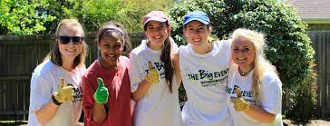
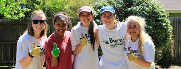
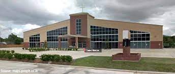

-
 

Big Event (Link to Big Event description page)
The Big Event, hosted annually by Texas A&M University, stands as one of the largest student-run community service projects in the nation. It embodies the Aggie spirit of selfless service, fostering a strong sense of community and connection between students and residents. Thousands of students volunteer to undertake tasks like gardening, painting, and general cleanup in neighborhoods around the campus. This event is significant as it strengthens the bond between the university and the local community, promotes volunteerism, and provides students with a tangible way to express their gratitude to the surrounding community.
-

Student Technician @ TAMU IT Department (Link to TAMU Technology Services page)
Technology Services at Texas A&M University is a key department providing comprehensive IT support and resources to students, faculty, and staff. It offers a wide range of services, including network connectivity, email, cloud storage solutions, and software support. The Help Desk, a crucial component of this department, is the first point of contact for technology-related queries. It offers assistance with technical issues, guidance on software usage, and troubleshooting. The Help Desk plays a vital role in ensuring the smooth functioning of technological infrastructure, supporting the university's academic and administrative activities.
-

Volunteering at St. Mary's Catholic church in Houston (Link to St. Mary's Knanaya Church page)
At St. Mary's Catholic church I frequently volunteer for youth event days. The biggest event during the year which I volunteer for is Kid's Day, which is a day-long event where booths for games, prizes, painting, and food are set for the youth to enjoy. The event is usually at the start of summer break in May and is primarily targeted for kids K-12. Volunteering at church is a fulfilling and impactful activity, offering numerous benefits to both individuals and the community. It creates a sense of belonging to my community and strengthens faith through active participation in the church community. Volunteers at St. Mary's often continue to volunteer because of the meaningful relationships built, satisfcation of giving back, technical and soft skills gained, as well as overall joy of belonging to a community. Church volunteering spans from community outreach to charity work to assisting in administrative tasks or youth programs. This engagement not only helps in meeting the needs of the community but also instills a sense of purpose and satisfaction, reinforcing christian values of compassion, service, and community support. I thoroughly enjoy my time volunteering in all the activites hostsed by the hurch and hope to give back more once I'm more established in my career.